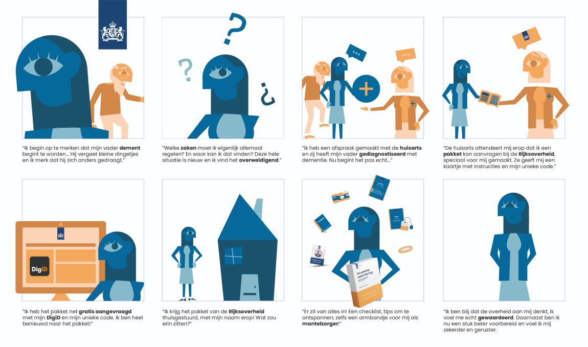

- 
About a package of appreciation Information on arranging life events such as having a child, buying a house or becoming unemployed can be found on the website of the national government. However, the road to get there is too complex for the user. The goal of the project was to devise an environment in which the people who experience life events can find everything in one place and arrange things with the government. In short, devise a service. The project was carried out in a group. It was decided to focus on the target group of informal caregivers with a demented parent and look at what they should arrange around this event. The aim was to gain insights into the bottlenecks of these informal carers, to look at how they can be helped and what service the central government can offer them. The process Various techniques have been used to find more info about the bottlenecks of these informal carers with a demented parent. First of all, several people were interviewed who are caregivers of their demented parent. Then a Customer Journey Map was created to discover the problems; for example, we found out that the initial phase of dementia was experienced as the most difficult for carers. From there, we looked at the various stakeholders involved, such as the general practitioner and geriatrician. This resulted in various concepts, one of which was about the fact that informal carers do not see themselfs as carers. We also found out that there should be more appreciation for this group from the government: a package of appreciation. The result After his/her parent has been diagnosed with dementia, the caregiver receives a package at home, tailored to his/her situation as an addition on top of the information from the general practitioner or geriatrician. The package is aimed at appreciation towards the informal carer. Carers also struggle to relax and have a lack of clarity. That is why there are several items in the package, namely a thank you card, a checklist with things that need to be arranged, tips for relaxing and tea, a diary, a bracelet for the caregiver and a disposable camera to capture the happy moments. The storyboard makes it clear what the service from the central government will look like.